Web UI ↔ ローカルエディタの往復
従来の AI 活用は Web UI とローカルエディタの往復を強いてきた。Grok Build はターミナルネイティブであり、ファイル編集からテスト実行までをその場で完結させ、開発者のディープワークを維持する。
Grok Build · xAI 正式リリース · Issue № 05/25
xAI が 2026 年 5 月にリリースした Grok Build（Grok CLI + Agent CLI）は、単なるツール追加ではない。LangGraph や CrewAI 等の選定、API 管理、環境構築という「DevOps 税」を、たった一打の curl で瞬時に崩壊させる、決定的な戦略転換点である。
元 Cursor / Notion のコアエンジニア Jason Ginsberg 氏らを擁する xAI が放った Grok Build は、Plan Mode（監査可能なガバナンス）× 最大 8 並列サブエージェント（独立 Worktree）× Arena Mode（複数案の自動採点）× Skills / skillify（暗黙知の資産化） で、爆速構築と自律実行を両立。Claude Code の MCP / CLAUDE.md / plugins 資産をそのまま読み込める高互換性 で乗り換え障壁を最小化し、Cached Input $0.20/1M でランニングコストを大幅圧縮。エンジニアは「実装者」から「オーケストレーター（指揮者）」へ。アイデアからプロダクト実装までの物理的制約が、事実上消滅する。
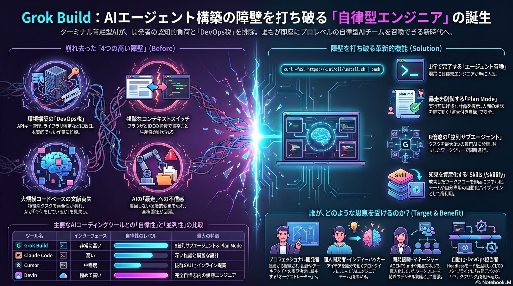
数週間を要していたエージェント構築の障壁が、1 行の curl コマンドで瞬時に崩壊した。開発者のクリエイティビティは実装の細部から解放され、より高次のアーキテクチャ設計と意思決定 へとシフトする。これは、アイデアからプロダクト実装までの物理的制約が事実上消滅したことを意味する。
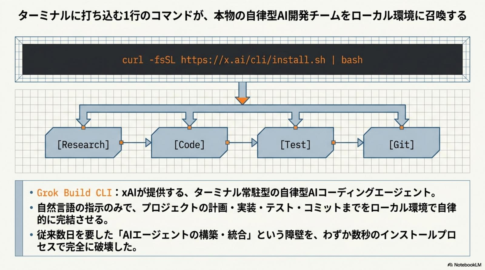
技術革新は、常に現場の切実な課題への回答でなければならない。Grok Build は、開発現場を長年苦しめてきた 4 つの本質的ペインポイント に対し、戦略的な解決策を提示する。プロジェクトのリードタイム短縮のみならず、エンジニアの「心理的安全」を飛躍的に向上させる。
従来の AI 活用は Web UI とローカルエディタの往復を強いてきた。Grok Build はターミナルネイティブであり、ファイル編集からテスト実行までをその場で完結させ、開発者のディープワークを維持する。
API キーの埋め込みやエージェントの挙動定義をコードで書く必要はない。1 行のインストール直後から、高度な推論能力が即座に「エージェント」として機能する。LangGraph や CrewAI の選定すら不要。
AI による予期せぬ破壊を防ぐ Plan Mode に加え、xAI は 「Code never leaves your machine（コードはローカルから出さない）」 を掲げる。解析と編集はローカル、推論のみクラウド——エンタープライズ層への決定的回答。
シングルエージェントの逐次処理による「待ち時間」を、最大 8 つのサブエージェントによる並列実行で打破。リサーチ・実装・テストを同時進行させ、大規模タスクのリードタイムを劇的に短縮する。
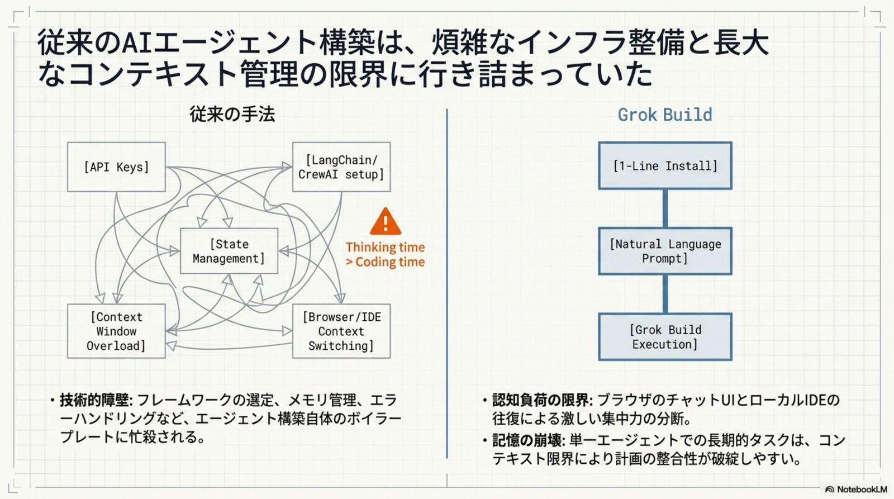
Grok Build は、ユーザー層ごとに異なる戦略的価値を提供し、開発者を 「実装者」から「オーケストレーター（指揮者）」 へと進化させる。プロフェッショナル・エンジニアから個人開発者、そして組織まで、3 つのレイヤーすべてで意味合いが変わる。
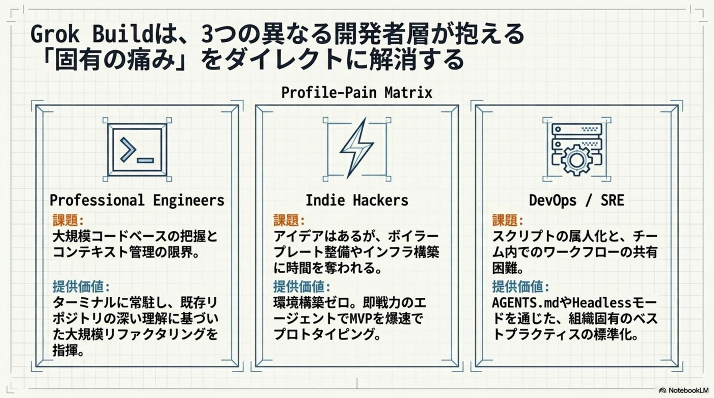
Grok Build の圧倒的優位性は、そのユニークなアーキテクチャに集約される。完全自律ではなく「監督付き自律」を実現する Plan Mode を起点に、並列実行・自動評価・知能の資産化が連鎖し、自律型エンジニアリングの基盤を形成する。
4 つの機能は単独ではなく、相互に組み合わさることで真価を発揮する。計画承認で安全性を担保し、並列実行で速度を稼ぎ、Arena で品質を評価し、Skills で再現性を確保——「自律型エンジニアリング」 という新たな開発パラダイムを完成させる。
plan.md）を提示。人間が Approve を出すまで AI はファイル書き込みをブロック。完全自律ではなく「監督付き自律」を実現。/skillify で即座にスキル化。次回から 1 コマンドで再現可能に。Tesla のエンジニアが「開発の反応速度を 20% 向上」と報告した中核機能。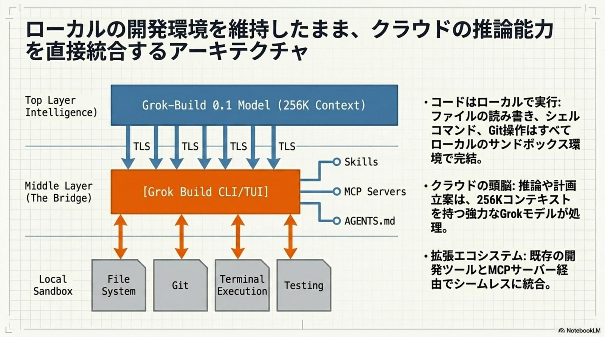
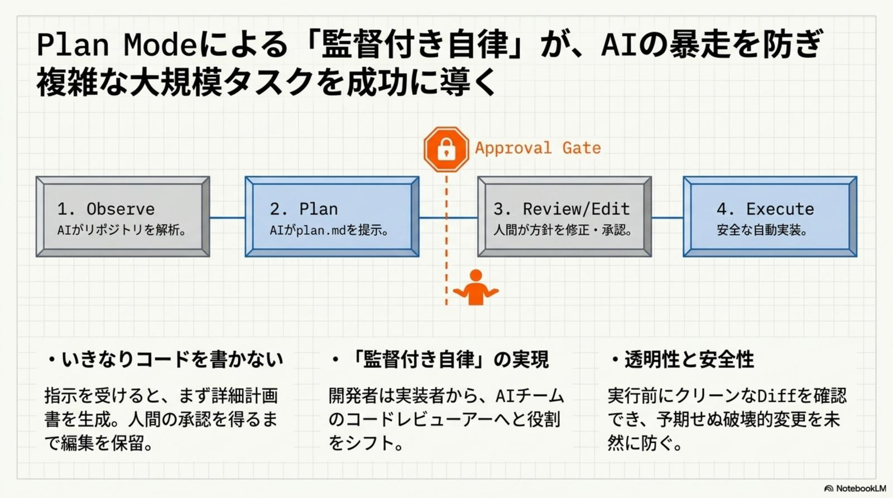
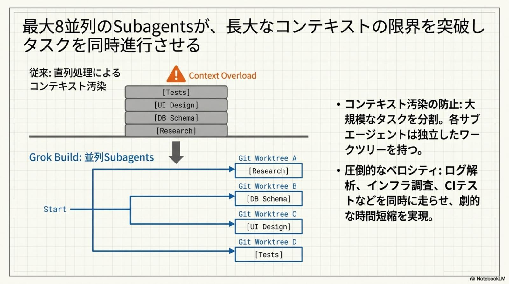
市場の主要ツールと比較した場合、Grok Build は 「爆速構築と並列処理」 において独自のポジションを築く。さらに先行ツールである Claude Code のエコシステム（MCP / CLAUDE.md / plugins 等）をそのまま読み込める高い互換性 を備え、乗り換え障壁（Switching Cost）が極めて低いのが戦略的メリットだ。
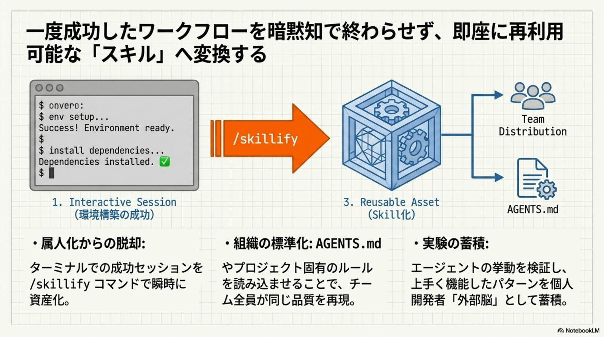
各ツールには得意領域がある。1 つに統合せず、用途別に使い分けるのが現時点での最適解だ。日常の細かな修正は Cursor、深い設計検討は Claude Code、大規模な自動化や並列探索は Grok Build——ハイブリッド運用こそが ROI を最大化する。
優れたツールも、経済性と安全性の管理なしには実戦投入できない。プランの選択、トークンコストの最適化、サンドボックス設定、文脈整理——4 つの観点で運用設計すれば、月額 $30〜$300 の投資はエンジニア数週間分の人件費を数時間に圧縮する極めて高い ROI を叩き出す。
当初は SuperGrok Heavy（$300/月）限定だったが、現在は通常の SuperGrok（$30/月）ユーザーへも段階展開。まずは月額 $30 で導入体験することを推奨。
Input $1.00/1M、Output $2.00/1M。特筆すべきは Cached Input $0.20/1M。長時間セッションでキャッシュを効かせ、ランニングコストを大幅圧縮。
Linux の Landlock、macOS の Seatbelt を採用。~/.ssh 等の機密ディレクトリをデフォルトで保護する strict プロファイルを有効化。
並列処理はトークン消費を激しく増大させる。定期的に /compact で文脈整理を実行し、コストと精度のバランスを保ち続けることが運用の必須リテラシー。
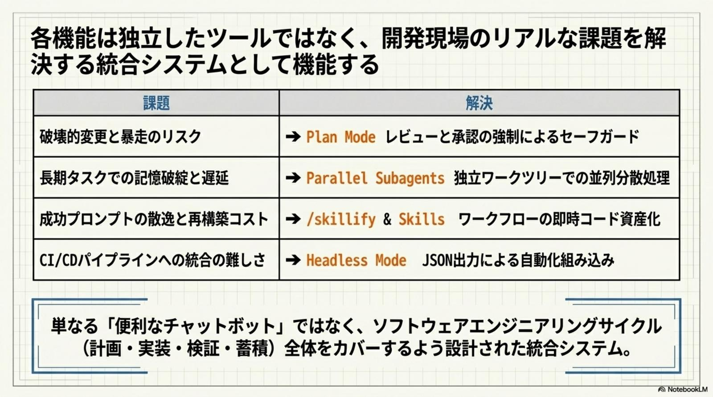
/compact でトークン消費を制御Grok Build のインストールと初回プロンプトはこれだけ。あなたのエンジニアリングは、今この瞬間から「自律の時代」へ突入する。
ターミナルで以下を実行するだけで、Grok CLI + Agent CLI が即座にローカルに展開される。curl -fsSL https://x.ai/cli/install.sh | bash
「Next.js + Tailwind で SaaS のランディングページを作成。Stripe 決済ボタン込み、レスポンシブ対応、Plan Mode で計画書を提示してから実装して」と一度叩くだけで、計画書→承認→8 並列 Worktree での実装→Arena で最良案選定までを完走。
「このリポジトリで P99 レイテンシが 3 秒を超えるエンドポイントを特定。8 並列で原因仮説を立て、Arena Mode で最良の修正案を選び、/skillify で再現可能なスキルに登録」——個人の勝ちパターンが組織資産へと自動変換される。
Grok Build は、AI が「助言者」から「実行責任を負う共同作業者」へと進化したことを象徴する。開発者の役割は「コードの記述者」から、AI チームに 意図（Intent） を与え、Arena Mode 等で品質と安全性を監督する 「品質責任者」 へと再定義された。
この変革を静観することは、将来的な開発スピードにおいて致命的な損失を招くリスクとなる。今すぐ、あなたのターミナルに「最強の自律型チーム」を召喚せよ。導入 → 並列実行 → スキル資産化のサイクルを6 ヶ月単位で回せば、組織の AI 開発成熟度は他社が追随できない水準に到達する。
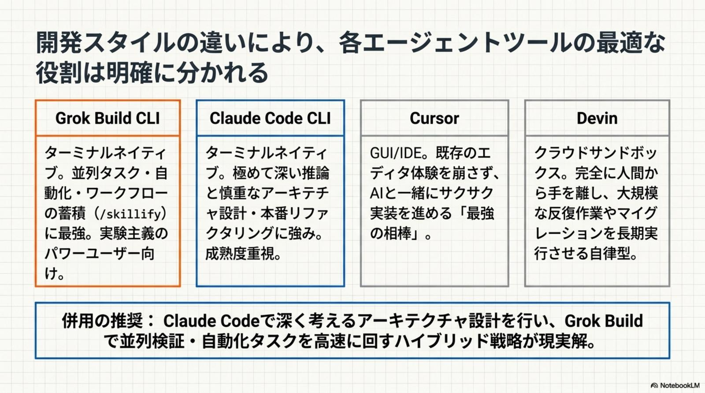
Grok Build の活用方針は立場ごとに異なる。最初の一歩を間違えなければ、3 ヶ月後の開発体験は別物になる。
大規模リファクタリングやレガシー刷新、P99 レイテンシの根本原因調査に Parallel Subagents を活用。数日分の作業を数時間に圧縮し、自分自身はシステム全体の整合性に責任を持つ「品質責任者」へと役割をシフトする。
アイデアから MVP までを1 人で完走。Plan Mode で安全性を担保しつつ、Arena Mode で複数案を競わせ最良案を選定。市場投入までの時間を最小化し、限られた資本効率を最大化する。
個人の「勝ちパターン」を /skillify で標準化された組織資産（デジタルアセット）へ変換。CI/CD 統合で自動品質管理を実現し、エンジニアの離職による知識流出を構造的に防ぐ。Claude Code 既存資産も互換性で活用。
Grok Build は、AI が「助言者」から「実行責任を負う共同作業者」へと進化したことを象徴している。— AIエージェント民主化の最前線 · Grok Build による開発パラダイムの転換 · 2026-05-25
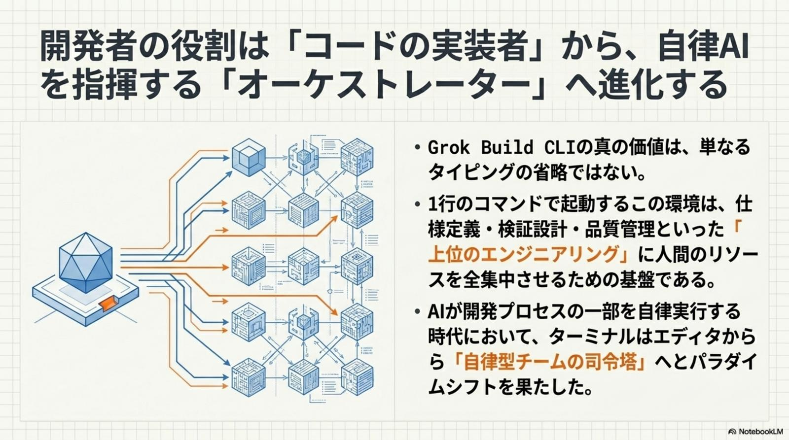
Grok Build 以外の 2026-05-25 主要トピックを併せてピックアップ。